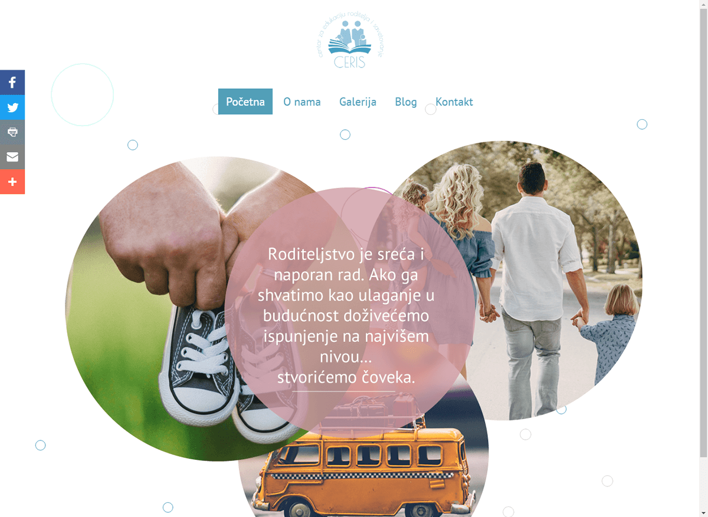

This website has been created for the education association Ceris

The website was created as a promotional website for a nongovernment association for educating parents and counseling.
The site included a top logo from the association and a navigation bar underneath the logo with the links to the home page, about us, gallery, blog, and the contact page. inside of the body, the site included a Circle rotates animation CSS which was completed for 4 circles in total in which 3 of them were images and one had included text advising the visitor in regards to proper parenthood. The left sidebar had contact links linking to the site Facebook, Twitter, etc.